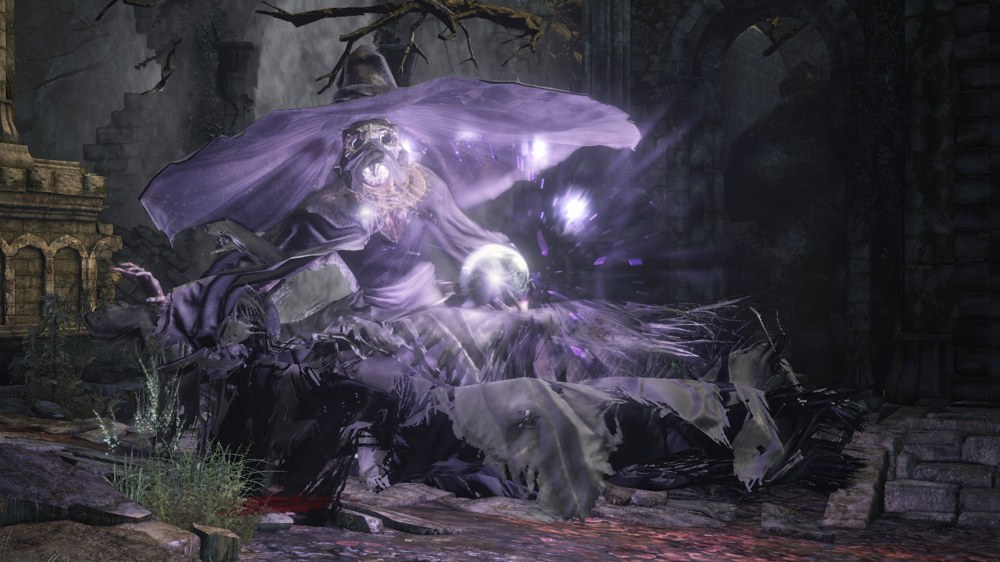

← Volver
← Volver
El Sabio de Cristal es un jefe de Dark Souls III. Es un humanoide grande cubierto con una túnica de hechicero suelta y viste un sombrero de mago lo suficientemente grande como para cubrirle el rostro. Principalmente canaliza hechizos usando un orbe mágico, pero puede atacar al jugador con su estoque si se acerca lo suficiente. El jugador debe estar alerta cuando se esté acercando a la arena ya que la batalla comienza apenas pone un pie dentro de la zona. Luego de que su barra de salud alcance un punto específico, el jefe comenzará a invocar clones que son prácticamente idénticos a él, aunque el color de su magia es diferente y los revelará como copias.
La clave para este jefe es la velocidad, saber manejar los niveles de resistencia puede hacer esta batalla mucho más sencilla. Este jefe no es opcional y debe ser derrotado para ganar acceso a la Catedral de las Profundidades. No se debe confundir con su versión "mini jefe" que se encuentra en el Gran Archivo. Hay solo un NPC que puede ser invocado para asistir en la contienda:
NOTA: Si has comprado algún milagro oscuro a Irina o has derrotado a los Vigilantes del Abismo, su señal no aparecerá.
¿Dónde se puede encontrar al Sabio de Cristal en Dark Souls III? En los Bosques de la Crucifixión, ubicados a la izquierda del pantano, se puede acceder al ingresar en una construcción en ruinas, pasando a un grupo de enemigos y subiendo varias escaleras. No hay puerta de niebla presente cubriendo la entrada a la arena, solo hay un simple giro a la izquierda en un área abierta.
| Playthrough | NG | NG+ | NG++ | NG+3 | NG+4 | NG+5 | NG+6 | NG+7 |
|---|---|---|---|---|---|---|---|---|
| Solo Souls | 8000 | 40000 | 44000 | 45000 | 48000 | 49000 | 50000 | 51000 |
| Co-op Souls (1/4) | 2000 | 10000 | 11000 | 11250 | 11250 | 12250 | 12500 | 12750 |
Esta es la cantidad de Almas que obtendremos al derrotar a los Vigilantes del Abismo en los diferentes playthrough, desde el New Game regular hasta NG+7. Su sombrero puede ser comprado a la Sierva del Santuario luego de derrotarlo.
| Playthrough | NG | NG+ | NG++ | NG+3 | NG+4 | NG+5 | NG+6 | NG+7 |
|---|---|---|---|---|---|---|---|---|
| Vida Total | 2.723 | 6.431 | 7.054 | 7.375 | 7.696 | 8.337 | 8.658 | 8.978 |
| Defensa | 104 | |||||||

 ↑
↑